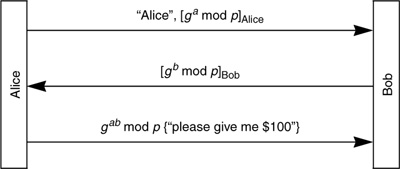
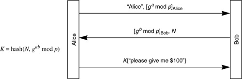

Networking Security Networking Security Networking Security Security Networking Security Networking Security Networking Charlie Kaufman Radia Perlman Mike Speciner Prentice Hall Network Security: Private Communication in a Public World, Second Edition
16.7. Live Partner Reassurance
If Trudy can replay messages from previous conversation negotiations, she might be able to get Bob to waste space on a connection, or worse yet, she might be able to replay the subsequent data messages and, even if she can't decrypt the conversation, she might be able to cause Bob to repeat actions. For instance, when Bob (an ATM machine) talked to Alice, she might have requested Bob to put $100 into the money tray, as in Protocol 16-5.

An hour later, if Trudy replays Alice's messages, it is important that Bob realize that this is not a conversation with the live Alice. If Bob chose a different b in each Diffie-Hellman exchange, then there wouldn't be a problem, but it is computation intensive to compute gb, so it might be nice to be able to reuse b.
A way to allow Bob to reuse b and avoid replay attacks is for Bob to choose a nonce for each connection attempt, and have the session key be a function of the nonce as well as the Diffie-Hellman key. So the protocol might be modified to look like Protocol 16-6.

Here the session key is a function of the nonce N as well as the Diffie-Hellman value. This seems similar to a cookie, but it is desirable for a cookie to be stateless, so that Bob does not have to keep state until he's at least sure the other end can listen at the IP address it claims to be sending from. With the most straightforward implementation of a stateless cookie, the cookie will be reused, so wouldn't work as a nonce. It is possible to design a protocol that will allow something to work both as a nonce and as a stateless cookie (see Homework Problem 10).
Note that we've only ensured that Bob knows it's the live Alice (and not replayed messages). How would Alice know it's the real Bob? If Alice chooses a different a each time, and if Alice receives proof from the other side that it knows K (for instance, by acting on her request, which was encrypted with K), then she knows it's the real Bob. But suppose Alice, like Bob, would like to reuse a to save herself from computing ga mod p (see Homework Problem 11).
|